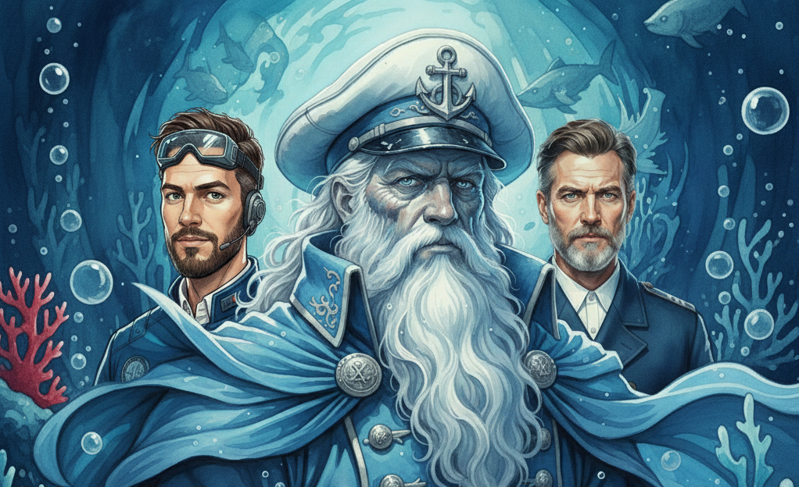

Captain Ashkar: Founder & Strategist
Captain Ashkar, a maritime historian and strategist, founded "Guardians of the Deep" after witnessing the rapid decline of critical deep-sea habitats. Driven by the belief that conservation begins with understanding, Ashkar brought together a team with complementary, unique skill sets.
The Genesis Story: The idea for the team crystallized during a perilous solo dive in the Kuril-Kamchatka Trench. Ashkar realized that large institutions were too slow to react to subtle environmental changes. A small, agile, and fiercely dedicated team was needed to map, document, and defend the ocean's most vulnerable ecosystems. Captain K was recruited for their engineering genius, and Captain A for their unmatched navigational skills, forming the core trident of the Guardians.
The Core Team
- Captain Ashkar: Strategy, History, and Dive Operations.
- Captain A: Acoustics, Cartography, and Navigation.
- Captain K: Submersible Engineering, Robotics, and Power Systems.